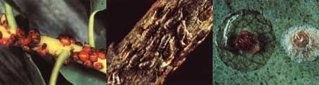

In predator-prey relationships, one axiom stands before all others: What can't be seen (that is, recognized) generally won't be eaten! And insects seem to have all but cornered the market on effective disguises. Moths blend in with tree bark . . . katydids resemble leaves ... and inchworms mimic twigs (when alarmed).
However, the slyest members of the whatyou-see-may-not-be-what-you-get set are definitely the scale insects. These crusted con artists look more like bird droppings or disease organisms than bugs . . . and are often ignored, even by gardeners. That's too bad, because scales are related to aphids and can become just as abundant . . . often literally encrusting the stems of trees and shrubs.
Young scales, called crawlers, are fairly mobile; but they soon grow sessile under the protection of their tough outer shell. These insects do their damage by sipping the sap from a host plant (usually orchard trees and ornamentals), a process that can cause a gradual decline in vigor of the plant or tree, stunt its growth, and even kill it. And the foliage-killers are so adept at hiding that they often exist unnoticed till winter causes the leaves to drop from their deciduous-tree hosts.
GROWING UP TOUGH
Of the 4,000 or so species of scale insects, few ever exceed 3 cm (1.2") in length, and most range in size from a barely discernible 1 mm to a tiny 1.5 cm. The most prevalent types, in the U.S., are the soft scales (family Coccidae) and the armored scales (family Diaspididae). Despite the names, both of these develop hard shells, but the soft scales grow theirs as an extension of their exoskeleton, whereas the protective "bubbles" of the armored group are not attached to the bugs' bodies.
In general, all scales have similar (and fairly simple) life cycles. They go through an incomplete metamorphosis (egg to nymph to adult). In the nymph stage, scale insects are equipped with legs, but when they reach adulthood, these appendages drop off, and the creatures become sedentary. A female lives out her life beneath a protective shell, sucking plant juice and laying eggs (about 1,000 a year!) till there's little left of her. An adult male-with a set of feeble wings able to propel him only a few feet at a time, and with no digestive tract-exists only to copulate, after which, in most cases, he will die.
TOP: Hemispherical scales are among the most common of soft scale insects. MIDDLE: Oystershell scales are oblong, armored scale in sects. BOTTOM: Two typical armored scales. The outer shell has been removed from the one on the left to expose the legless insect beneath.
A FEW SPECIFICS
About the most notorious (and prolific!) scale insect in the U.S. is the armored San Jose (Quadraspidiotus perniciosus). This minuscule black or brown bug is particular ly injurious to orchard trees and ornamentals, and an army of them-if not controlled-can easily destroy an entire tree. The San Jose's armored, oblong cousin, the oystershell scale (Lepidosaphes ulmi), enjoys the same diet and is equally lethal.
Citrus, avocados, ferns, and greenhouse plants are fair game for the hemispherical scale (Saissetia hemisphaerica), a brown, softshelled member of the crusted clan. Black scales (Saissetia oleae) are widely distributed soft scales and are destructive to olives, citrus, pears, apples, grapes, and figs. All in all, the North American species of the scale family are too numerous to list, but they're so minute that, without a microscope, you'd often be hard put to tell one "breed" from another anyway.
ERADICATION
Scales are difficult to get rid of, but in many instances they can be kept in check by natural predators and parasites. Ladybugs, such as the vedalia (Rodolia cardinalis),which was imported into California from Australia in 1860 to combat cottony-cushion scales (Icerya purchasi ), and various chalcid wasps (Aphy tis lingnanensis, A. melinus, and Prospaltella perniciosi) are often loosed in scale-infested orchards and greenhouses. And these insects have proved pretty effective at cleaning up the crusty bug population.
Then again, if you've got the time, you could try hand-crushing scales. But, if you do so, remember that females lay their eggs underneath their shells . . . so you've got to really put the pressure on in order to destroy them!
As a last resort, oil sprays can be used against the pesky insects. The so-called dormant sprays are oil solutions that are applied to deciduous trees during their dormant season. These are most effective when sprayed in early spring after the young scales hatch and before buds on the trees open. Lighterweight "summer oils" are generally used on citrus and evergreens during their growing season.
One last thought. Although scales may seem to lead relatively dreary existences, you've got to admit they're pretty darn good at the two things they do best: living off our food-bearing trees (and plants), and procreating! So the next time you spot what appears to be a rash on your prized citrus tree, better take a closer look to make sure it's not a colony of those elusive masters of disguise . . . the scale insects.
|
 Here's the ninth in a series of articles that will help you tell friend from foe in your garden. |
|
|